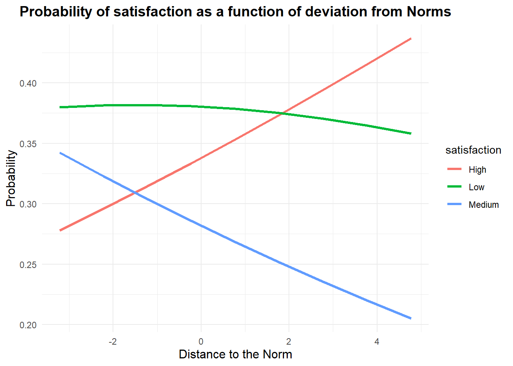

3Notre Mesure: Le Cultural Gender Normativity Index (CGNI)
3.1 Construction de l’indice
L’indice que nous proposons repose donc sur la dernière approche présentée:
Un indice de mesure continue de l’identité de genre, construit comme un indice composite à partir de dimensions non définies a priori comme genrées.
Mais alors, quelles variables choisir pour représenter ces dimensions du genre?
Notre choix s’est porté sur les pratiques culturelles des français (leurs loisirs culturels) car ces pratiques sont en effet particulièrement genrées (différenciées selon les sexes biologiques), il nous paraissait pertinent de s’appuyer sur ces dernières pour construire notre indice.
3.1.1 Pratiques culturelles et Genre ?
En sociologie, la question de la culture et du Genre fait l’objet de travaux ayant montré combien les pratiques culturelles sont différenciées chez les hommes et les femmes (Octobre (2008)) , et ce, dès l’enfance.
Cette différenciation nous permet d’envisager qu’il y ait des pratiques plus ou moins féminines ou masculines, dans la mesure où en moyenne elles sont plus pratiquées par des hommes ou par des femmes.
Cela signifie qu’il existe des normes genrées dans la pratique ou non d’une activité culturelle: le tricot est essentiellement féminin, la chasse est une activité plutôt pratiquée par les hommes.
Ces exemples sont tirés de l’analyse de nos données, en effet, nous avons utilisé la base de données Enquête sur les pratiques culturelles des Français, 2018.
Cette base de données comprend des informations sur les pratiques culturelles des français (9234 individus interrogés) , ainsi que des données socio-démographiques et porte également une question qui va nous intéresser sur le degré de satisfaction en termes de temps libre.
Cette dernière variable (“Vous arrive-t-il d’avoir le sentiment de manquer de temps libre pour faire tout ce dont vous avez envie?”) a retenu notre attention car elle pourrait être une mesure de l’utilité (satisfaction) de l’individu.
3.1.1.1 Statistiques descriptives de la base de données
2 Wilcoxon rank sum test; Pearson’s Chi-squared test with simulated p-value (based on 2000 replicates); Fisher’s Exact Test for Count Data with simulated p-value (based on 2000 replicates)
Lecture: Parmi les individus de sexe masculin, 59% sont en couple. La différence avec les femmes est significative (p<0,001)
Lecture: Parmi les hommes, 1.8% déclarent pratiquer le tricot, contre 27% des femmes. Cette activité est pratiquée par 16% des répondants.
Les p-value <10% indiquent que les différences de participation aux pratiques culturelles sont significativement différentes selon le sexe biologique du répondant.
Note
Nous retiendrons pour la construction de notre indice les pratiques culturelles suivantes:
Afin de construire notre indice d’identité de genre, nous suivons la méthodologie proposée par Cipriani et al. (n.d.) et réalisons une Analyse des Correspondances Multiples (ACM) sur nos variables “pratiques culturelles”.
On remarque que la variable supplémentaire “Sexe” correspond à la dimension 2 de notre ACM. Cette dimension explique 6,06% de la variance totale.
Une analyse plus poussée avec le package Explor nous permet de mesurer l’association de la variable supplémentaire Sexe avec cette dimension (dim2), en effet, l’ \(𝞰^2\) est de 0,14 , ce qui peut sembler peu mais indique bien que notre variable supplémentaire est liée à cet axe.
Pour construire notre indice, nous utiliserons donc les coordonnées des variables pratiques culturelles le long de cet axe 2.
# Extract coordinates for dimension 2coord_dim2_modalites <- acm2_fm$var$coord[, 2]# Create a table associating the modalities and their coordinates in dimension 2modalites_coord <-data.frame(Modalite = modalites_names, Coord_Dim2 = coord_dim2_modalites)# Keep only the two necessary columnsmodalites_coord_selected <- modalites_coord[, c("Modalite", "Coord_Dim2")]print(modalites_coord_selected)
Ce tableau indique les poids utilisés pour la construction de notre indice.
code R
# Initialize a vector to store the index of each individualra_data$indice_culturel <-0# Browse each individualfor (i in1:nrow(ra_data)) {# Initialize individual's index to 0 indice_individu <-0# Browse each practice column (columns 3 to 27)for (pratique in3:27) {# Retrieve the individual's response for this practice (0 or 1) reponse <- ra_data[i, pratique]# If the answer is 1, add the coordinate of the corresponding modality to the index.if (reponse ==1) {# Create the modality name (e.g. “knitting_1” or “knitting_0”) nom_modalite_1 <-paste0(names(ra_data)[pratique], "_1") nom_modalite_0 <-paste0(names(ra_data)[pratique], "_0")# Find the coordinate associated with the corresponding modalityif (nom_modalite_1 %in% modalites_coord$Modalite) { indice_individu <- indice_individu + modalites_coord$Coord_Dim2[modalites_coord$Modalite == nom_modalite_1] }if (nom_modalite_0 %in% modalites_coord$Modalite) { indice_individu <- indice_individu + modalites_coord$Coord_Dim2[modalites_coord$Modalite == nom_modalite_0] } } }# Assign the calculated index to the individual ra_data$indice_culturel[i] <- indice_individu}####Normalisation# Calculate minimum and maximum index valuesmin_indice <-min(ra_data$indice_culturel, na.rm =TRUE)max_indice <-max(ra_data$indice_culturel, na.rm =TRUE)# Normalize indexra_data$indice_culturel_normalise <- (ra_data$indice_culturel - min_indice) / (max_indice - min_indice)# Check resultshead(ra_data[, c("indice_culturel", "indice_culturel_normalise")])
Notre indice est donc construit de la façon suivante:
\[I_{1j} = \sum_{k=1}^{Z} w_{1k} \cdot X_{k j}\]
Dans cette expression, \(I_{1j}\) désigne l’indice de l’individu \(j\), tandis que \(w_{1k}\) représente le poids associé à chaque variable culturelle \(X_{kj}\). La somme englobe toutes les variables culturelles \(Z\), ce qui nous permet de saisir l’engagement culturel global de l’individu.
3.1.3 Description de l’indice
code R
my_data_frame$identity<-ra_data$indice_culturel_normalisemy_data_frame$indice<-ra_data$indice_culturelggplot(my_data_frame, aes(x = identity, fill = Sex)) +geom_density(alpha =0.5) +scale_fill_manual(values =c("blue", "pink")) +labs(title ="Density of The Normalized Cultural Index by Sexe",x ="Normalized Cultural Index",y ="Density",fill ="Sexe") +theme_minimal()
L’indice normalisé est compris entre 0 et 1. Plus il est proche de zéro plus les individus sont proches de la norme féminine (en termes de pratiques culturelles).
L’indice est significativement différent selon le sexe biologique des interrogés.
code R
reg<-lm(identity~Sex, my_data_frame)summary(reg)
Call:
lm(formula = identity ~ Sex, data = my_data_frame)
Residuals:
Min 1Q Median 3Q Max
-0.41933 -0.07875 -0.01093 0.06694 0.58782
Coefficients:
Estimate Std. Error t value Pr(>|t|)
(Intercept) 0.424436 0.001815 233.79 <2e-16 ***
SexWomen -0.099669 0.002450 -40.69 <2e-16 ***
---
Signif. codes: 0 '***' 0.001 '**' 0.01 '*' 0.05 '.' 0.1 ' ' 1
Residual standard error: 0.1171 on 9232 degrees of freedom
Multiple R-squared: 0.1521, Adjusted R-squared: 0.152
F-statistic: 1656 on 1 and 9232 DF, p-value: < 2.2e-16
Le sexe biologique est très significatif, les valeurs plus faibles de l’indice sont associées au sexe féminin.
3.1.4 Robustesse
code R
data$identity<- my_data_frame$identitymy_data_frame$identity<-data$identity# List of cultural activitiescultural_activities <-c("Knitting" , "Cards_games", "Gambling" , "Cooking" , "DIY" ,"Vegetable_garden" , "Fishing_hunting" , "Collection" ,"Vehicle_custom","Making_music" ,"Diary" ,"Writing" , "Painting", "Montage" , "Pottery" , "Theater" , "Drawing" , "Dancing", "Photography" ,"Genealogy" , "Science" ,"None" ,"Video_games" ,"Library" ,"Concert")# Create a data frame to store the resultsresult_table <-data.frame(Activity =character(0), Accuracy =numeric(0))for (activity in cultural_activities) {# Perform a Probit regression for the current cultural activity model_formula <-as.formula(paste(activity, "~ identity")) model <-glm(model_formula, data = my_data_frame, family =binomial(link ="probit"))# Calculate predictions predicted <-ifelse(predict(model, type ="response") >=0.5, 1, 0)# Calculate the accuracy correct_predictions <-sum(predicted == my_data_frame[[activity]]) total_predictions <-nrow(my_data_frame) accuracy <- (correct_predictions / total_predictions) *100# Add the result to the data frame result_table <-rbind(result_table, data.frame(Activity = activity, Accuracy = accuracy))}result_table
Nous réalisons une série de régressions Probit sur les différentes pratiques culturelles, avec pour unique régresseur notre indice d’identité, afin de mesurer le pouvoir prédictif (ou accuracy) de ce dernier.
3.1.5 Comparaisons avec d’autres mesures ?
Comparons l’indice obtenu avec d’autres mesures, et plus particulièrement avec les indices échelle d’identité.
Pour cela, nous allons diviser notre indice en 7 catégories, allant du plus féminin au plus masculin.
Ce tableau est à mettre en perspective avec les données de Trachman (2022a).
Tout d’abord non remarquons que, comme dans l’enquête de Trachman (2022a), les individus “hors norme” sont peu nombreux (d’après notre indice, moins de 0,1% des femmes ont des pratiques culturelles très masculines; 0,2% des hommes ont des pratiques très féminines) , de même que les individus dont les pratiques culturelles seraient complètement conformes à leur sexe biologique ne sont pas la majorité (4,3% des femmes sont classées comme très féminines, 0,5% des hommes comme très masculins.)
Cela plaide encore une fois pour l’intérêt d’une mesure continue.
Nous allons ensuite explorer plus en détails les variables socio-démographiques qui peuvent influencer notre indice (revenu, âge, catégorie socio-professionnelle …)
3.2 Variables socio-économiques et identité de genre
Dans cette partie, nous allons analyser les implications socio-économiques de l’identité de genre.
Pour commencer, nous allons regarder les différents profils des individus selon leur indice d’identité.
Puis nous analyserons les liens entre distance à la norme et l’utilité des individus (leur degré de satisfaction.)
2 Pearson’s Chi-squared test with simulated p-value (based on 2000 replicates); Fisher’s Exact Test for Count Data with simulated p-value (based on 2000 replicates)
Lecture: Parmi les individus catégorisés comme très féminins selon notre indice, 44% ont des revenus élevés. Les variables étudiées sont significativement différentes selon les degrés d’identité.
Il semble, d’après cette première table descriptive, que l’âge, les niveaux de revenus ainsi que les professions (CLASSIF) jouent un rôle dans l’identité de genre. Tout comme dans l’étude de Trachman (2022b), les facteurs socio-économiques influencent les variations du genre.
CLASSIF
1
Manoeuvre ou ouvrier spécialisé
2
Ouvrier qualifié ou hautement qualifié/ technicien(ne) d’atelier
3
Technicien(ne)
4
Agent de maîtrise, maîtrise administrative ou commerciale, VRP (non cadre)
5
Ingénieur, Cadre
6
Employé(e) de bureau, Employé(e) de commerce, Personnel de services
7
Directeur général, Adjoint direct
8
NSP
9
REF
On peut regarder si les effets sont différents selon le sexe biologique:
2 Fisher’s Exact Test for Count Data with simulated p-value (based on 2000 replicates)
Lecture: Parmi les hommes classés comme très féminins, 27% appartiennent à la catégorie socio-professionnelle 5 (ingénieur, cadre)
3.2.1 Distance à la norme
Nous l’évoquions au début de ce document, ce qui nous intéresse en proposant une mesure continue des variations du genre c’est de pouvoir analyser les distances prises avec les normes de son groupe de référence.
Pour cela, nous allons construire la variable “Distance à la norme”
code R
mean_gender <-tapply(my_data_frame$identity, my_data_frame$Sex, mean)sd_gender <-tapply(my_data_frame$identity, my_data_frame$Sex, sd)my_data_frame$distance<- (my_data_frame$identity - mean_gender[my_data_frame$Sex]) / sd_gender[my_data_frame$Sex]ggplot(my_data_frame, aes(x = distance, color = Sex, fill = Sex)) +geom_density(alpha =0.4) +labs(title ="Density of Distance to the Norm, by Sex", x ="Distance to the Norm (Z-score)", y ="Density") +scale_fill_manual(values =c("blue", "pink")) +scale_color_manual(values =c("blue", "pink")) +theme_minimal()
code R
#Ou en valeur absolue: mean_gender <-tapply(my_data_frame$identity, my_data_frame$Sex, mean)sd_gender <-tapply(my_data_frame$identity, my_data_frame$Sex, sd)my_data_frame$distance_abs<-abs((my_data_frame$identity - mean_gender[my_data_frame$Sex]) / sd_gender[my_data_frame$Sex])ggplot(my_data_frame, aes(x = distance_abs, color = Sex, fill = Sex)) +geom_density(alpha =0.4) +labs(title ="Density of Distance to the Norm, by Sex", x ="Distance to the Norm (Z-score)", y ="Density") +scale_fill_manual(values =c("blue", "pink")) +scale_color_manual(values =c("blue", "pink")) +theme_minimal()
library(MASS)my_data_frame$satisfaction<-as.factor((my_data_frame$satisfaction))# Ordinal logistic regression model fittingordinal_model <-polr(satisfaction ~ distance, data = my_data_frame, Hess =TRUE)# 1. Predict the probabilities for each categorydistance_vals <-seq(min(my_data_frame$distance), max(my_data_frame$distance))new_data <-data.frame(distance = distance_vals)predicted_probs <-predict(ordinal_model, newdata = new_data, type ="probs")# 3. Convert results to dataframepredicted_probs_df <-as.data.frame(predicted_probs)predicted_probs_df$distance <- distance_vals# 4. Transform data into long format for ggplot2predicted_probs_long <-pivot_longer(predicted_probs_df, cols =-distance, names_to ="satisfaction", values_to ="probabilite")# 5. Visualize predicted probabilitiesggplot(predicted_probs_long, aes(x = distance, y = probabilite, color = satisfaction)) +geom_line(size =1.2) +labs(title ="Probability of satisfaction as a function of deviation from Norms",x ="Distance to the Norm",y ="Probability") +theme_minimal() +theme(plot.title =element_text(hjust =0.5, size =14, face ="bold"),axis.title.x =element_text(size =12),axis.title.y =element_text(size =12) )

La satisfaction est mesurée comme étant la réponse à la question “Vous arrive-t-il d’avoir le sentiment de manquer de temps libre pour faire tout ce dont vous avez envie ?”
Ce graphique semble indiquer que la satisfaction en termes de temps libre croît avec la distance à sa norme de genre.
Cet effet est-il vérifié pour les différents niveaux de revenus et le sexe biologique?
code R
# Graph with only lines and no scatter pointsggplot(my_data_frame, aes(x = distance, y =as.numeric(satisfaction), color =as.factor(Income))) +geom_smooth(method ="lm", aes(linetype =as.factor(Income)), se =FALSE) +# Regression curves without confidence intervals and different line types # Gray scale palettescale_linetype_manual(values =c("Low"="solid", "Medium"="dashed", "High"="twodash")) +# Line types: solid, dashed, and twodash for the 3rdlabs(title ="Interaction between Distance to the Norm and Income Groups",x ="Distance to the Norm (z-score)",y ="Satisfaction (ordinal)",color ="Income (grouped)",linetype ="Line Type" ) +theme_minimal() +# Minimalist themetheme(text =element_text(size =12), # Text sizepanel.grid =element_blank(), # Remove gridlinespanel.border =element_blank(), # Remove borders around the plotplot.background =element_blank(), # Remove gray backgroundlegend.position ="top", # Place legend at the topaxis.title =element_text(color ="black"), # Axis titles in blackaxis.text =element_text(color ="black") # Axis text in black )
L’effet semble s’inverser pour les bas revenus, s’écarter de la norme s’accompagne d’une baisse de la satisfaction ressentie.
# Fit ordinal logistic regression model including SEXordinal_model2 <-polr(satisfaction ~ distance * Sex, data = my_data_frame, Hess =TRUE)# Create a sequence of values for conformityconformity_vals <-seq(min(my_data_frame$distance), max(my_data_frame$distance))# Create a new dataset with all combinations of conformity and SEXnew_data <-expand.grid(distance = distance_vals, Sex =c("Men", "Women"))# Predict probabilities for each combination of conformity and SEXEpredicted_probs <-predict(ordinal_model2, newdata = new_data, type ="probs")# Convert results to dataframepredicted_probs_df <-as.data.frame(predicted_probs)predicted_probs_df$distance <- new_data$distancepredicted_probs_df$Sex <- new_data$Sex# Correctly name probability columns for satisfaction levels 1, 2 and 3colnames(predicted_probs_df)[1:3] <-c("satisfaction_1", "satisfaction_2", "satisfaction_3")# Transformation to long format for easier viewing with ggplot2predicted_probs_long <-pivot_longer(predicted_probs_df, cols =starts_with("satisfaction"), # Selects columns satisfaction_1, 2 and 3names_to ="satisfaction", values_to ="probabilite")# Modify names for simple labelspredicted_probs_long$satisfaction <-factor(predicted_probs_long$satisfaction, levels =c("satisfaction_1", "satisfaction_2", "satisfaction_3"),labels =c("Low", "Medium", "High"))# Visualize predicted probabilities for each genderggplot(predicted_probs_long, aes(x = distance, y = probabilite, color = satisfaction, linetype = Sex)) +geom_line(size =1.2) +labs(title ="Predicted Probabilities of Satisfaction Based on Distance to the Norm",x ="Distance to the Norm",y ="Probability") +scale_color_manual(values =c("#87CEEB", "#4682B4", "#1E90FF")) +# scale_linetype_manual(values =c("solid", "dashed")) +# Differentiates between men and womentheme_minimal() +theme(plot.title =element_text(hjust =0.5, size =14, face ="bold"),axis.title.x =element_text(size =12),axis.title.y =element_text(size =12) )
Ce graphique montre des différences significatives entre hommes et femmes, chez les femmes l’éloignement aux normes semble augmenter l’insatisfaction, cet effet n’est pas aussi net chez les hommes.
Cipriani, Enzo, Charles-Edouard Giguère, Eugénie Samson, Ioana Cotocea, and Robert-Paul Juster. n.d. “Comment mesurer indirectement le genre en recherche sur les humains?” 21.
Octobre, Sylvie. 2008. “Loisirs culturels et construction du genre au sein de la famille:”Agora débats/jeunesses N° 47 (1): 98–110. https://doi.org/10.3917/agora.047.0098.
Trachman, Mathieu. 2022a. “Très masculin, pas très féminine. Les variations sociales du genre:”Population & Sociétés N° 605 (10): 1–4. https://doi.org/10.3917/popsoc.605.0001.
———. 2022b. “Très masculin, pas très féminine. Les variations sociales du genre:”Population & Sociétés N° 605 (10): 14. https://doi.org/10.3917/popsoc.605.0001.